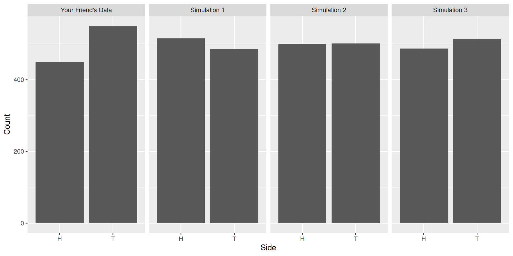
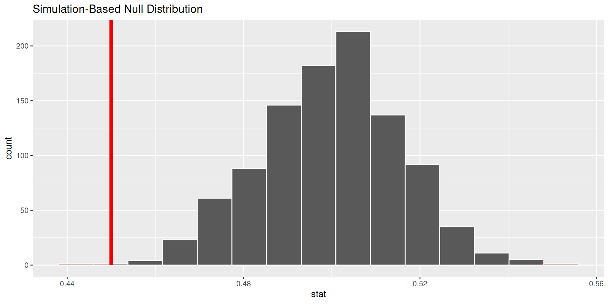

Response: side (factor)
Null Hypothesis: point
# A tibble: 3 × 2
replicate stat
<int> <dbl>
1 1 0.515
2 2 0.499
3 3 0.487Hypothesis Tests II
Simulating the null by taking draws
WarningThis page covers…
- TODO
Hypothesis tests are a tool for assessing the consistency between data and a proposed model for how the data was generated. There are a myriad of hypothesis tests, but they all follow the same basic structure.
- Assert a model for how the data was generated (the null hypothesis)
- Select a test statistic that bears on that null hypothesis (a mean, a proportion, a difference in means, a difference in proportions, etc).
- Approximate the sampling distribution of that statistic under the null hypothesis (aka the null distribution)
- Assess the degree of consistency between that distribution and the test statistic that was actually observed (either visually or by calculating a p-value)
In the last set of notes, we learned about one tool for step 3: shuffling. When the null hypothesis asserts that two variables have nothing to do with one another, then we can simulate other possible data sets by shuffling one of the columns. This approach, called a permutation test, is useful when one of the variables defines two groups. In the case of Kristen Gilbert, shuffling allowed us to simulate worlds where deaths in the ward were just as likely as not to fall into the group of shifts when Gilbert was working.
In these notes, you’ll learn a method for simulating data that corresponds to a different kind of null hypothesis.
Test of One Proportion
When we explored probability, we used a few scenarios repeatedly to help motivate concepts: rolling a six-sided die, drawing from a standard deck of 52 playing cards. We’ll return to a similar setting here and consider tossing a (two-sided) coin. Oftentimes, we think of coins being fair, meaning that, on any given toss, the probability of landing on the “heads” side is the same as that of landing on the “tails” side. But what would it take for us to feel comfortable in believing that any given coin is fair? Today, we’ll discuss how to develop a hypothesis test to answer this question.
Asserting a model
Let’s imagine a world where we believe a given coin is a fair. In this world, the coin has a probability \(p\) of landing on the “heads” side, and that probability would be \(0.5\). We can use this statement as our null hypothesis, since it tells us exactly how the result of each toss of the coin is “generated”, so to speak.
\[H_0: p = 0.5\]
A competing viewpoint would be that the coin is not fair; that is, that \(p\) is something other than \(0.5\). Let’s use this as our alternative hypothesis.
\[H_A: p \neq 0.5\]
Selecting a test statistic
Oftentimes, an appropriate test statistic will be an empirical version of the quantity you see in the equation for the null hypothesis. In this case, the quantity is a theoretical probability (\(p\)). When we are given a coin, we aren’t going to know what \(p\) is! But, we could toss the coin many times and record the proportion of times that it lands on “heads”. This would give us an approximate idea of what \(p\) is, especially if the number of tosses is large. Let’s call this proportion \(\hat{p}\), since it is an estimation of the true value of \(p\). Let’s use \(\hat{p}\) as our test statistic.
Now, say your friend comes to you with a penny that he found on the sidewalk. He tells you that he tossed the coin 1000 times, and that in those 1000 tosses, he observed 450 heads. In this case, our friend has an observed value of the test statistic (which you might call \(\hat{p}_{observed}\)) equal to \(\frac{450}{1000}=0.45\).
If the coin truly was fair, how often would we expect to get a value of \(0.45\) (or something further away from \(0.5\))? This is what we will investigate now.
Approximate the null distribution
The null distribution refers to all the possible test statistics that one could achieve, along with their corresponding probabilities. In this case, it would be all of the possible proportions of heads that one could get in 1000 tosses (all possible \(\hat{p}\)’s), along with the corresponding probabilities of getting each one of those proportions. If we could attain this distribution, we’d know exactly how often we would see \(\hat{p}_{observed} = 0.45\) or something more extreme.
However, it can be a lot of work to calculate this distribution exactly! Let’s approximate it. We can do this as follows:
- Write code that simulates and stores the results (“heads” or “tails”) from tossing a coin 1000 times.
- Calculate the proportion of heads. This gives us one \(\hat{p}\).
- Repeat the first two steps a large number of times.
To see what is taking place, let’s hold off partially on step 3 for a moment and repeat our process only a few times. Below are three simulated values of \(\hat{p}\) under the null hypothesis, alongside a bar chart which displays the distribution of tosses for each of the three simulations (of 1000 tosses each), as well as the distribution of tosses that your friend came up with himself.
For each of our three simulations, our \(\hat{p}\) hovers around \(0.5\). This is what we should expect after tossing the coin so many times! After one thousand tosses, we should have a pretty good idea about how the coin behaves.
Remember that our \(\hat{p}_{observed}\) is equal to \(0.45\). To get a visual comparison as well as a numeric one, we can create a few bar charts with the distributions for our simulations and match these up with our friend’s distribution.

Notice that, for each of our three simulation, the bars for “H” and “T” are very close to one another (around 500 tosses for each side). This is what we would expect when tossing a fair coin such a large number of times! There’s a larger discrepancy in the bars when it comes to our friend’s data, but is it large enough to where it’s unreasonable to believe his coin is fair?
This is where generating a large amount of simulated data can provide some clarity. Let’s now return to step 3 in our process and repeat the steps of 1 and 2 many, many times. This will give us a large set of simulated test statistics (simulated \(\hat{p}\)’s) to which we can measure up \(\hat{p}_{observed}\) against. This set of numbers is our approximate null distribution!
Let’s visualize our null distribution using a histogram and mark the location of \(\hat{p}_{observed}\) (and also, values which are even further from our hypothesized \(p\) of 0.5).

Assess the degree of consistency
Using the above plot, we can answer our initial question. The vertical, red line marks the location of \(\hat{p}_{observed}\). Since we chose the alternative hypothesis of \(H_A: p \neq 0.5\), and our \(\hat{p}_{observed}\) is equal to \(0.45\), this means values less than or equal to \(0.45\) (to the left of the vertical line) and greater than or equal to \(0.55\) will be highlighted in red. We’ll spend more time talking about these details tomorrow!
Yet, our line isn’t touching any piece of our null distribution (so there won’t be any highlighting on the left), and we don’t see any values highlighted on the right, either.
What this means is that, if the null hypothesis were true and our friend’s coin was fair, it would be virtually impossible to observe only a \(0.45\) proportion of heads (or something further away from \(p=0.5\)) in 1000 tosses. Therefore, we would conclude that the alternative hypothesis is the viewpoint more consistent with the data.
Summary
In these notes you learned about a second form of null hypothesis, one where you explicitly define the proportions of a categorical variable. This type of null hypothesis allows you to generate data through simulating the process of drawing tickets from a box that is designed to match your null hypothesis.
In today’s scenario, our categorical variable was “side of a coin”, and it had two levels: “heads” and “tails.” Accordingly, you might think of the appropriate box for this scenario as having two tickets: “T” and “H”. From this box, you would draw 1000 times with replacement; this would represent the 1000 tosses of a supposedly fair coin.
With that being said, you might also encounter categorical variables with more than just two levels. A simple proportion will not do in this case! The most common test statistic used in this scenario is the chi-squared statistic, which measures the “distance” between two categorical distributions (for instance, between a simulated distribution and a hypothesized distribution).
Just as in the permutation tests from last time, you can assess the consistency between the null hypothesis and your data by calculating a p-value: the probability of drawing a statistic as or more extreme than the one that you observed in a world where the null hypothesis is true.